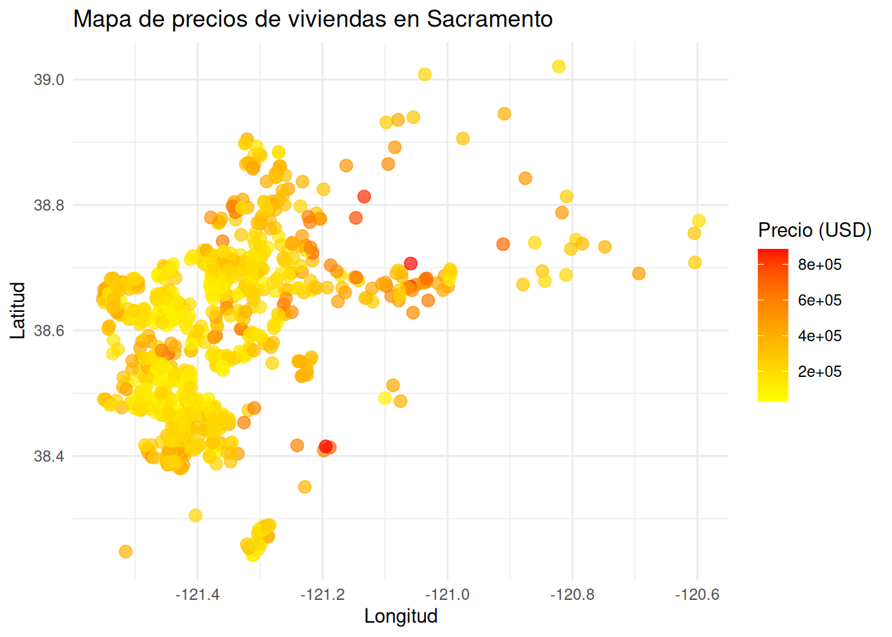
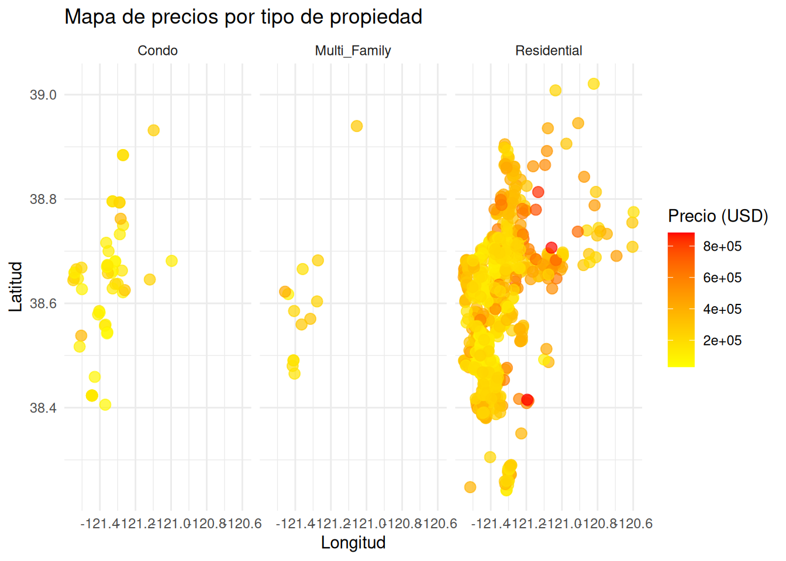
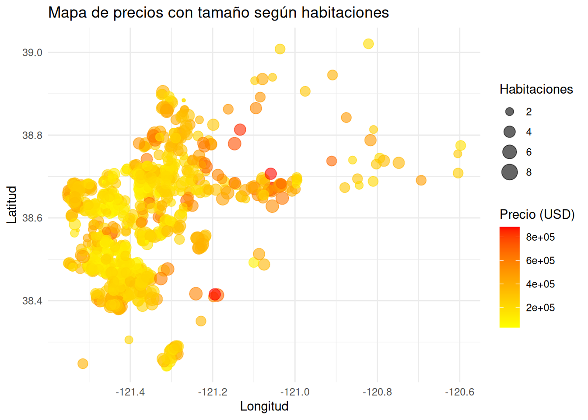
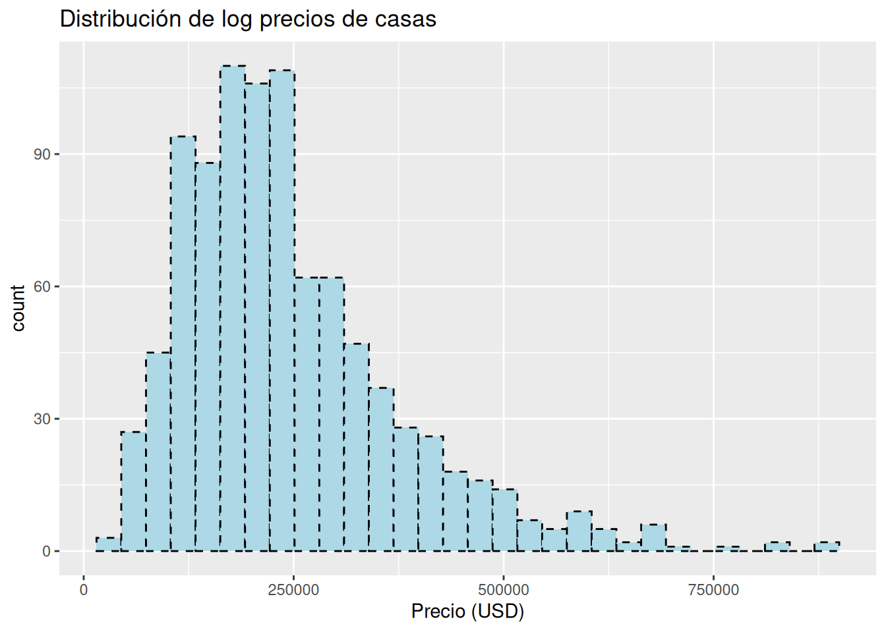
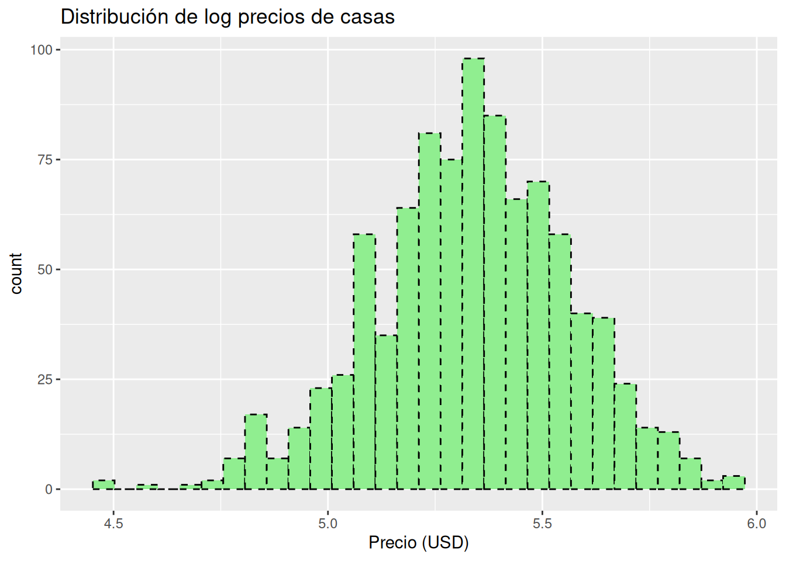
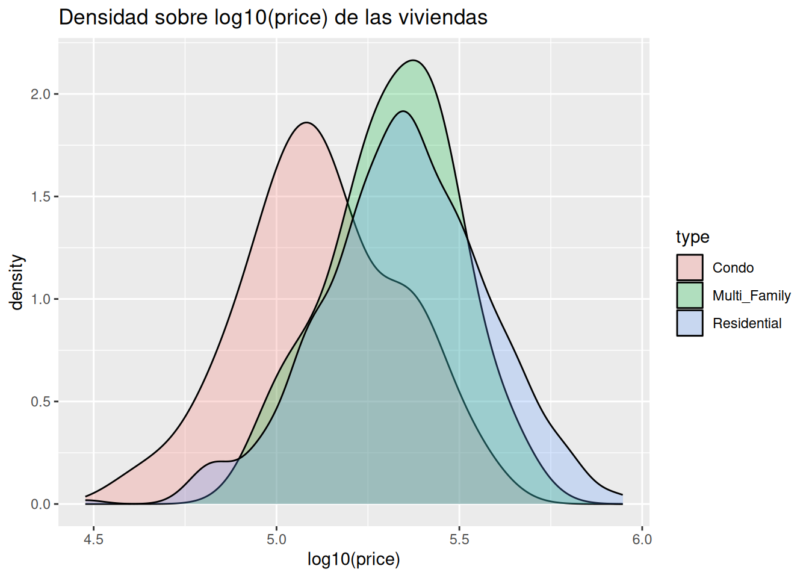
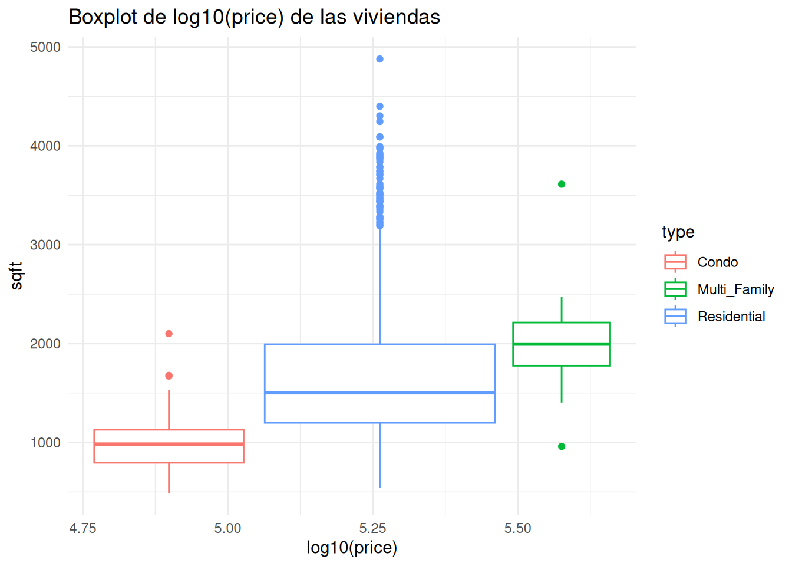
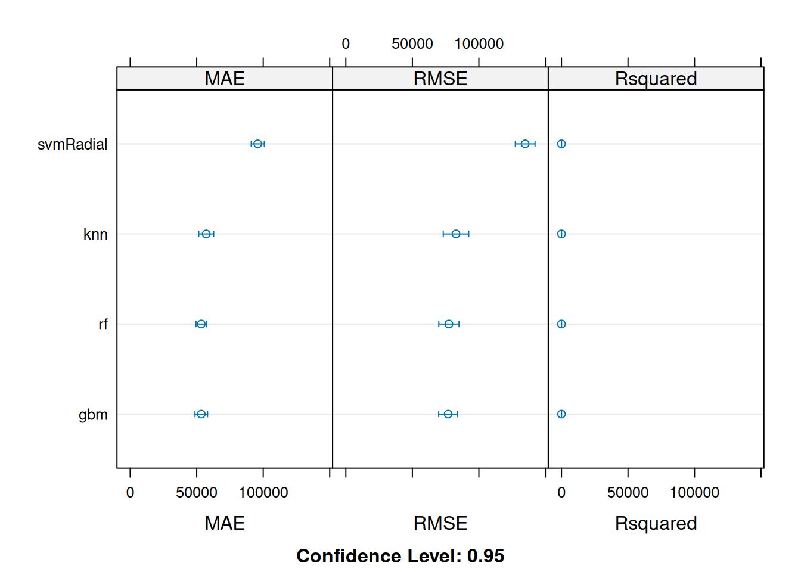
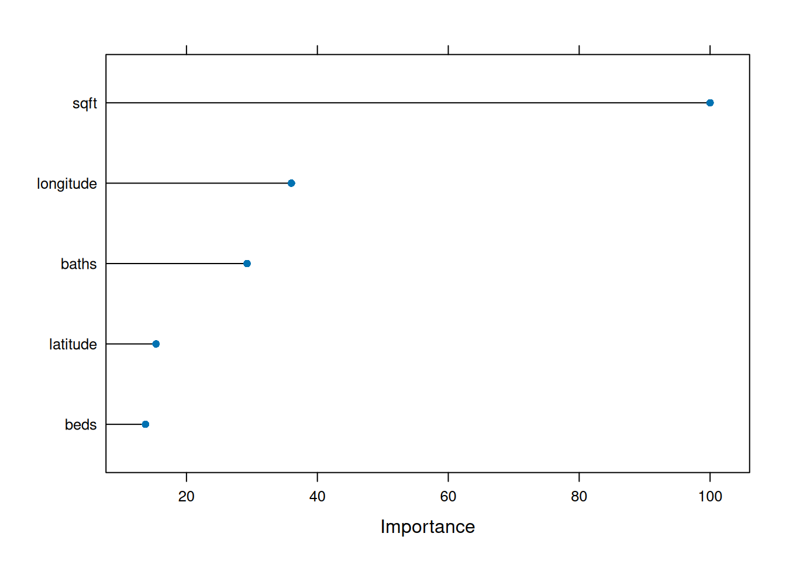

library(caret)
library(ggplot2)
library(dplyr)Dataset Sacramento
Analisis del dataset de Sacramento
El dataset de Sacramento contiene información sobre viviendas y precios de venta de 932 casas en Sacramento, California. Los datos originales se obtuvieron del sitio web del software SpatialKey. Según su sitio web: «El archivo de transacciones inmobiliarias de Sacramento es una lista de 985 transacciones inmobiliarias en el área de Sacramento, registradas durante un período de cinco días, según lo publicado por el Sacramento Bee». Se utilizó Google para completar los datos faltantes o incorrectos.
Cargar las librerias y el dataset
Cargar el dataset dentro de la variable datos.
data(Sacramento)
datos = SacramentoInformación del dataset
# city: Ciudad donde se encuentra la propiedad (factor).
# zip: Código postal (factor).
# beds: Número de habitaciones (numérico).
# baths: Número de baños (numérico).
# sqft: Superficie en pies cuadrados (numérico).
# type: Tipo de propiedad (factor: Residential, Condo, Multi-Family, etc.).
# price: Precio de venta en dólares (numérico).
# latitude: Latitud geográfica (numérico).
# longitude: Longitud geográfica (numérico).dim(datos)[1] 932 9El dataset tiene 932 observaciones y 9 variables.
str(datos)'data.frame': 932 obs. of 9 variables:
$ city : Factor w/ 37 levels "ANTELOPE","AUBURN",..: 34 34 34 34 34 34 34 34 29 31 ...
$ zip : Factor w/ 68 levels "z95603","z95608",..: 64 52 44 44 53 65 66 49 24 25 ...
$ beds : int 2 3 2 2 2 3 3 3 2 3 ...
$ baths : num 1 1 1 1 1 1 2 1 2 2 ...
$ sqft : int 836 1167 796 852 797 1122 1104 1177 941 1146 ...
$ type : Factor w/ 3 levels "Condo","Multi_Family",..: 3 3 3 3 3 1 3 3 1 3 ...
$ price : int 59222 68212 68880 69307 81900 89921 90895 91002 94905 98937 ...
$ latitude : num 38.6 38.5 38.6 38.6 38.5 ...
$ longitude: num -121 -121 -121 -121 -121 ...Se observa que existen variables numéricas y categóricas, la variable a analizar es price, la cual es numérica.
Resumen estadístico del dataset
summary(datos) city zip beds baths
SACRAMENTO :438 z95823 : 61 Min. :1.000 Min. :1.000
ELK_GROVE :114 z95828 : 45 1st Qu.:3.000 1st Qu.:2.000
ROSEVILLE : 48 z95758 : 44 Median :3.000 Median :2.000
CITRUS_HEIGHTS: 35 z95835 : 37 Mean :3.276 Mean :2.053
ANTELOPE : 33 z95838 : 37 3rd Qu.:4.000 3rd Qu.:2.000
RANCHO_CORDOVA: 28 z95757 : 36 Max. :8.000 Max. :5.000
(Other) :236 (Other):672
sqft type price latitude
Min. : 484 Condo : 53 Min. : 30000 Min. :38.24
1st Qu.:1167 Multi_Family: 13 1st Qu.:156000 1st Qu.:38.48
Median :1470 Residential :866 Median :220000 Median :38.62
Mean :1680 Mean :246662 Mean :38.59
3rd Qu.:1954 3rd Qu.:305000 3rd Qu.:38.69
Max. :4878 Max. :884790 Max. :39.02
longitude
Min. :-121.6
1st Qu.:-121.4
Median :-121.4
Mean :-121.4
3rd Qu.:-121.3
Max. :-120.6
ggplot(Sacramento, aes(x = longitude, y = latitude)) +
geom_point(aes(color = price), alpha = 0.7, size = 3) +
scale_color_gradient(low = "yellow", high = "red") +
labs(title = "Mapa de precios de viviendas en Sacramento",
x = "Longitud", y = "Latitud", color = "Precio (USD)") +
theme_minimal()
El color indica el precio: amarillo = más barato, rojo = más caro. El gráfico es un Scatterplot geográfico: latitud vs longitud
ggplot(Sacramento, aes(x = longitude, y = latitude)) +
geom_point(aes(color = price), alpha = 0.7, size = 3) +
scale_color_gradient(low = "yellow", high = "red") +
facet_wrap(~ type) +
labs(title = "Mapa de precios por tipo de propiedad",
x = "Longitud", y = "Latitud", color = "Precio (USD)") +
theme_minimal()
El color indica el precio: amarillo = más barato, rojo = más caro. El gráfico de latitud vs longitud se divido en 3 categorias: condominio, multifamiliar y residencial
ggplot(Sacramento, aes(x = longitude, y = latitude)) +
geom_point(aes(color = price, size = beds), alpha = 0.6) +
scale_color_gradient(low = "yellow", high = "red") +
labs(title = "Mapa de precios con tamaño según habitaciones",
x = "Longitud", y = "Latitud", color = "Precio (USD)", size = "Habitaciones") +
theme_minimal()
El color indica el precio: amarillo = más barato, rojo = más caro. El gráfico de latitud vs longitud, se añadio el tamaño de las habitaciones
ggplot(datos, aes(x=price)) + geom_histogram(color="black", fill="lightblue",
linetype="dashed")+ xlab(label = "Precio (USD)")+
labs(title ="Distribución de log precios de casas" )
Distribución de precios de las viviendas, se ve una asimetría en los datos
ggplot(datos, aes(x=log10(price))) + geom_histogram(color="black", fill="lightgreen",
linetype="dashed")+ xlab(label = "Precio (USD)")+
labs(title ="Distribución de log precios de casas" )
Distribución de log10(Precio) de las viviendas, debido a que existe una asimetría en los datos
ggplot(datos) +
geom_density(aes(x = log10(price), fill = type), alpha=0.25)+
ggtitle("Densidad sobre log10(price) de las viviendas")
ggplot(data=datos,aes(x=log10(price), y=sqft,color=type)) +
geom_boxplot() +theme_minimal()+ theme() +
ggtitle("Boxplot de log10(price) de las viviendas")
Modelado
set.seed(123)
train <- createDataPartition(log10(datos$price), p = 0.8, list = FALSE)
trainData <- datos[train, ]
testData <- datos[-train, ]Se divide el dataset en 80% train y 20% test, se utilizo el log para una mejor distribución de los datos
x_train_Data <- trainData %>% select(-price)
x_test_Data <- testData %>% select(-price)
preProcValues <- preProcess(x_train_Data, method = c("center", "scale"))
trainTransformed <- predict(preProcValues, x_train_Data)
testTransformed <- predict(preProcValues, x_test_Data)Se realiza un escalado y centrado de variables y disminuir la varianza de las variables
trainTransformed$price <- trainData$price
testTransformed$price <- testData$priceReconstruimos los datasets con la variable objetivo y ademas transformadolo en log10 para un mejor modelado de los datos
set.seed(123)
ctrl <- trainControl(method = "cv", number = 5)Realizamos un cross-validation para evitar el sobreajuste
set.seed(123)
methods <- c("rf", "svmRadial", "knn", "gbm")Los modelos que se van a entrenar son: random forest, svmRadial, k-Nearest Neighbors y Generalized Boosted Models
models <- lapply(methods, function(m) {
train(price ~ .,
data = trainTransformed,
method = m,
trControl = ctrl,
tuneLength = 5,
verbose = FALSE)})Se entreno el modelo con los 4 modelos mas utilizados
names(models) <- methods
results <- resamples(models)
summary(results)$statistics$MAE
Min. 1st Qu. Median Mean 3rd Qu. Max. NA's
rf 49238.18 51598.00 53164.11 53445.53 56602.50 56624.86 0
svmRadial 91789.55 92955.09 95152.69 95895.11 98034.69 101543.53 0
knn 49924.93 56814.36 57146.50 57134.09 59973.65 61811.00 0
gbm 50253.21 50766.03 52178.14 53445.29 54415.45 59613.60 0
$RMSE
Min. 1st Qu. Median Mean 3rd Qu. Max. NA's
rf 70454.95 71479.84 80554.00 77476.81 80764.17 84131.10 0
svmRadial 125715.68 134115.58 134245.84 134809.59 138444.56 141526.26 0
knn 71110.45 79521.12 84608.08 82789.01 88674.75 90030.63 0
gbm 69287.99 73344.62 78326.73 76928.29 79544.99 84137.15 0
$Rsquared
Min. 1st Qu. Median Mean 3rd Qu. Max. NA's
rf 0.5987966 0.6300578 0.6643078 0.6620008 0.6895211 0.7273205 0
svmRadial 0.3993386 0.4330001 0.4491988 0.4478477 0.4508483 0.5068530 0
knn 0.5540326 0.6000681 0.6172839 0.6127602 0.6373535 0.6550627 0
gbm 0.6399544 0.6458829 0.6762382 0.6654302 0.6812276 0.6838476 0Resumen de las métricas de MAE, RMSE, Rsquared
dotplot(results)
Se observa en la gráfica, tanto el rf como gbm tiene los valores mas bajos de RMSE.
best_model <- models[["rf"]]
pred_price <- predict(best_model, newdata = testTransformed)
RMSE(pred_price, testData$price)[1] 59945.81En los datos de test se observa que el RMSE es de casi 60000,
importance <- varImp(best_model, scale = TRUE)
plot(importance, top = 5)
El gráfico muestra las variables mas importantes, en las que se encuentra sqft, longitude y baths